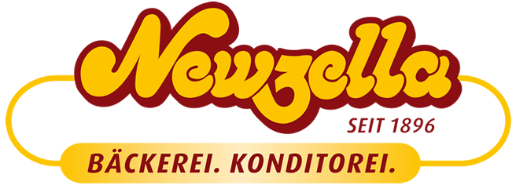

Ausgesuchte Brote
Vom Laib mit Seele bis zum kräftigen Klassiker.

Gutes Brot für jeden Tag. Feine Torten für die großen. Newzella verbindet Bäckerei und Konditorei seit 1896.
EntdeckenSo beliebt wie kaum ein anderes Lebensmittel: das Brot. Wir backen es täglich und fertigen in vierter Generation auch knusprige Brötchen, duftiges Gebäck, saftige Obstkuchen und feine Sahne- und Cremetorten.
Wasser, Mehl, Salz, Hefe und viel Liebe zum Handwerk.
Mehr über unsEine große Auswahl – freundlich beraten, mehrmals täglich frisch in unsere Fachgeschäfte geliefert.
Vom Laib mit Seele bis zum kräftigen Klassiker.
Für den perfekten Start in den Tag.
Die süße Pause zwischendurch.
Für Geburtstage und besondere Momente.
Veranstaltungstorten, Geburtstagstorten, Kommunionstorten und mehr. Wir helfen dir, etwas Besonderes auszuwählen.
Feine Schichten, frische Zutaten und ein Anlass, der nach mehr schmeckt.
Torten ansehenSprich uns in deinem Fachgeschäft an oder nimm Kontakt auf.
Kontakt aufnehmenTreukarte und Gutscheine für Menschen mit Geschmack.
Mehr erfahrenSechs Fachgeschäfte und Cafés. Wähle einen Standort und plane deinen Besuch.
Tradition, die täglich neu gebacken wird.
Ausbildung, Vielfalt und Engagement gehören dazu.
Karriere in einem mittelständischen Familienbetrieb.